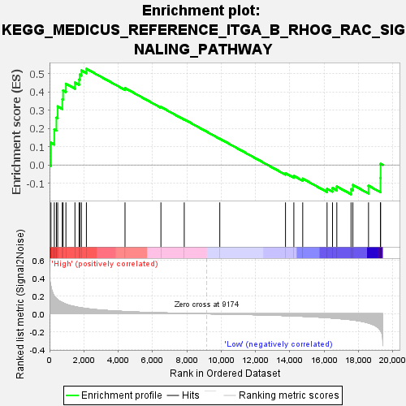
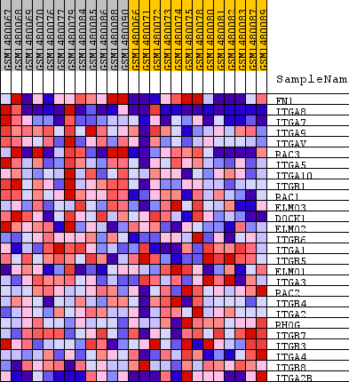
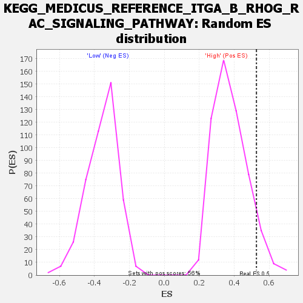

| Dataset | WG6v3.MRPL3.cls#High_versus_Low.MRPL3.cls#High_versus_Low_repos |
| Phenotype | MRPL3.cls#High_versus_Low_repos |
| Upregulated in class | High |
| GeneSet | KEGG_MEDICUS_REFERENCE_ITGA_B_RHOG_RAC_SIGNALING_PATHWAY |
| Enrichment Score (ES) | 0.5263698 |
| Normalized Enrichment Score (NES) | 1.3976609 |
| Nominal p-value | 0.06964286 |
| FDR q-value | 0.55385077 |
| FWER p-Value | 1.0 |

| SYMBOL | TITLE | RANK IN GENE LIST | RANK METRIC SCORE | RUNNING ES | CORE ENRICHMENT | |
|---|---|---|---|---|---|---|
| 1 | FN1 | FN1 | 84 | 0.301 | 0.1217 | Yes |
| 2 | ITGA8 | ITGA8 | 278 | 0.198 | 0.1946 | Yes |
| 3 | ITGA7 | ITGA7 | 401 | 0.169 | 0.2589 | Yes |
| 4 | ITGA9 | ITGA9 | 476 | 0.157 | 0.3206 | Yes |
| 5 | ITGAV | ITGAV | 744 | 0.126 | 0.3595 | Yes |
| 6 | RAC3 | RAC3 | 788 | 0.121 | 0.4080 | Yes |
| 7 | ITGA5 | ITGA5 | 955 | 0.108 | 0.4446 | Yes |
| 8 | ITGA10 | ITGA10 | 1481 | 0.079 | 0.4508 | Yes |
| 9 | ITGB1 | ITGB1 | 1724 | 0.070 | 0.4676 | Yes |
| 10 | RAC1 | RAC1 | 1763 | 0.069 | 0.4943 | Yes |
| 11 | ELMO3 | ELMO3 | 1857 | 0.066 | 0.5171 | Yes |
| 12 | DOCK1 | DOCK1 | 2149 | 0.058 | 0.5264 | Yes |
| 13 | ELMO2 | ELMO2 | 4399 | 0.025 | 0.4209 | No |
| 14 | ITGB6 | ITGB6 | 6491 | 0.011 | 0.3175 | No |
| 15 | ITGA1 | ITGA1 | 7850 | 0.005 | 0.2495 | No |
| 16 | ITGB5 | ITGB5 | 9921 | -0.003 | 0.1438 | No |
| 17 | ELMO1 | ELMO1 | 13750 | -0.020 | -0.0450 | No |
| 18 | ITGA3 | ITGA3 | 14237 | -0.024 | -0.0601 | No |
| 19 | RAC2 | RAC2 | 14754 | -0.028 | -0.0750 | No |
| 20 | ITGB4 | ITGB4 | 16172 | -0.043 | -0.1301 | No |
| 21 | ITGA2 | ITGA2 | 16490 | -0.048 | -0.1265 | No |
| 22 | RHOG | RHOG | 16741 | -0.051 | -0.1179 | No |
| 23 | ITGB7 | ITGB7 | 17569 | -0.066 | -0.1328 | No |
| 24 | ITGB3 | ITGB3 | 17677 | -0.069 | -0.1096 | No |
| 25 | ITGA4 | ITGA4 | 18588 | -0.103 | -0.1135 | No |
| 26 | ITGB8 | ITGB8 | 19284 | -0.185 | -0.0718 | No |
| 27 | ITGA2B | ITGA2B | 19292 | -0.188 | 0.0067 | No |

